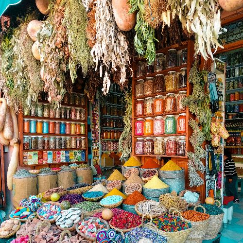
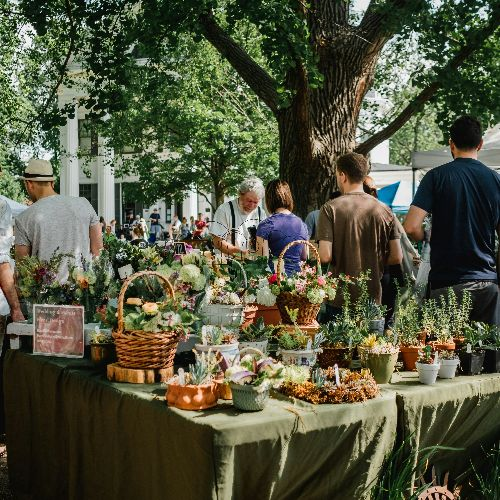

Recorrido
De ciudad en ciudad, sembrando conciencia
Desde nuestros inicios, miles de personas ya fueron parte de esta feria en diferentes puntos de la provincia. Nos emociona compartir con vos lo vivido. Mirá la galería de fotos y reviví momentos únicos llenos de color, aprendizaje y comunidad.

Mar del Plata

Ciudad de Buenos Aires
La Plata
Tigre

Luján

Lanús

Quilmes

San Isidro

Necochea

Berazategui
Próximos destinos
¿Querés saber cuándo llegamos a tu ciudad? Consultá el calendario de fechas y preparate para una experiencia diferente.
Junio
Ciudad Autónoma de Buenos Aires
Sábados y domingos de 9:30 a 21:30
Julio
La Plata
Sábados y domingos de 9:30 a 21:30
Agosto
San Isidro
Sábados y domingos de 9:30 a 21:30
Septiembre
Luján
Sábados y domingos de 9:30 a 21:30
Octubre
Berazategui
Sábados y domingos de 9:30 a 21:30
Noviembre
Quilmes
Sábados y domingos de 9:30 a 21:30